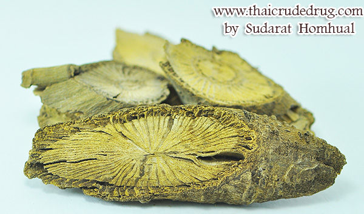

สมุนไพรไทย 22 ชนิดเสี่ยงสูญพันธุ์ ประกาศคุ้มครองและควบคุม 7 ชนิด
เผยแพร่: 19 ม.ค. 2560 09:09 ปรับปรุง: 19 ม.ค. 2560 10:41 โดย: MGR Onlineสธ. ประกาศรายชื่อ “สมุนไพรไทย” 22 ชนิดเสี่ยงสูญพันธุ์ เหตุเติบโตช้า เมื่อใช้ต้องใช้ทั้งต้น หรือทั้งราก หรือใช้บ่อยจึงรักษาได้ คัดเลือกสมุนไพร 7 ชนิด ออกประกาศคุ้มครองและควบคุม ผู้ครอบครองต้องแจ้งจำนวนที่มี เพื่อทำแผนการใช้และการปลูกทดแทน
นายนันทศักดิ์ โชติชนะเดชาวงศ์ ผู้อำนวยการกองคุ้มครองภูมิปัญญาการแพทย์แผนไทยและพื้นบ้านไทย กรมพัฒนาการแพทย์แผนไทยและการแพทย์ทางเลือก กระทรวงสาธารณสุข (สธ.) กล่าวว่า ขณะนี้มีสมุนไพรไทย 22 ชนิด ที่เสี่ยงอาจจะสูญพันธุ์
คณะกรรมการคุ้มครองและส่งเสริมภูมิปัญญาการแพทย์แผนไทยได้ประชุมหารือกัน โดยเลือกสมุนไพร 6 ชนิดจาก 22 ชนิดขึ้นมา คือ ถั่วดินโคก หรือ พิษนาศน์ เทพทาโร มะตูมนิ่ม มะหาด เร่ว และ หัวร้อยรู นอกจากนี้ ยังเสนอสมุนไพร “กระวาน” ขึ้นมาเป็นพิเศษด้วยอีกชนิดหนึ่ง เพื่อประกาศคุ้มครองและเป็นสมุนไพรที่ต้องควบคุม โดยหากใครมีสมุนไพร 7 ตัวนี้อยู่ในครอบครองไม่ได้ถือว่ามีความผิด เพียงแต่ต้องแจ้งมาทาง สธ. ให้รับทราบว่ามีอยู่เท่าใด เพื่อที่จะจัดทำแผนส่งเสริมการปลูกต่อไป เช่น บริษัทใดมีสมุนไพร 7 นี้อยู่ ใช้ผลิตยาไปเท่าใด ต้องปลูกทดแทนเท่าใด เพื่อไม่ให้สูญพันธุ์
ข้อมูลสมุนไพร

ถั่วดินโคก
สรรพคุณ ฝนกับน้ำดื่ม ช่วยลดไข้ในเด็ก ฝนทาแก้พิษงู บำรุงน้ำนม ฝนทาฝี

เทพทาโร
สรรพคุณ ใช้ทำเครื่องเทศ ขับลม บำรุงธาตุ แก้ท้องอืดท้องเฟ้อ แก้ลมจุกเสียด แน่นเฟ้อ
มะตูมนิ่ม
สรรพคุณ แก้ท้องเดิน รักษาไข้มาลาเรีย ขับลมในลำไส้ แก้ปากเปื่อย ขับเสมหะ แก้พิษฝี พิษไข้
มะหาด
สรรพคุณ แก้เบื่ออาหาร แก้ลม ขับโลหิต ละลายเลือด ขับปัสสาวะ

เร่ว
สรรพคุณ แก้ไข้ แก้ริดสีดวง แก้หืดไอ ขับลมในลำไส้ แก้คลื่นเหียน อาเจียน แก้ริดสีดวง
หัวร้อยรู
สรรพคุณ บำรุงหัวใจ ขับชีพจร ขับพยาธิ แก้พิษในข้อในกระดูก

กระทุ่มนา
สรรพคุณ ลดความดันโลหิตและออกฤทธิ์กดต่อกล้ามเนื้อเรียบในสัตว์ทดลอง

ขันทองพยาบาท
สรรพคุณ แก้โรคผิวหนัง กลาก เกลื้อน แก้ลมพิษ แก้กามโรค แก้น้ำเหลืองเสีย
จุกโรหินี
สรรพคุณ แก้ปวดท้อง แก้ท้องร่วง แก้อาเจียน แก้บิด
ชะเอมไทย
สรรพคุณ แก้โรคในลำคอ แก้ลม แก้เลือดออกตามไรฟัน
ชิงชี่
สรรพคุณ แก้โรคที่เกิดในท้อง ขับลมภายใน แก้ไข้ร้อนในทุกชนิด ไข้พิษ
ตับเต่า
สรรพคุณ ลดความดันโลหิต ต้มน้ำกินแก้ไข้ แก้ปวดมดลูก แก้โรคลำไส้
นางแย้มป่า
สรรพคุณ ช่วยรักษาลำไส้อักเสบ แก้ไตพิการ แก้กระดูกสันหลังอักเสบเรื้อรัง
ปลาไหลเผือก
สรรพคุณ แก้ไข้ แก้ปวดท้อง แก้ลม แก้วัณโรคระยะบวม
พังคี
สรรพคุณ แก้ท้องอืด ท้องเฟ้อ แก้ฟกช้ำดำเขียว แก้อาการท้องอืดเฟ้อ จุกเสียด แน่นหน้าอก

มะคังแดง
สรรพคุณ แก้ปวดเส้นเอ็น อัมพฤกษ์ อัมพาต แก้ริดสีดวงทวาร

สะค้าน
สรรพคุณ ขับลมในลำไส้ แก้แน่น แก้จุกเสียด บำรุงธาตุ ทำให้ผายเรอ
สารภีป่า
สรรพคุณ ใช้ถ่ายพยาธิ แก้บิด และแก้ไข้

อบเชยไทย
สรรพคุณ แก้ตับอักเสบ อาหารไม่ย่อย แก้ท้องเสีย ลำไส้เล็กทำงานผิดปกติ ขับพยาธิ
เฉียงพร้านางแอ
สรรพคุณ ฝนน้ำกินแก้ไข้ ต้มน้ำดื่มบำรุงร่างกาย เป็นยาเจริญอาหารสำหรับสตรีหลังคลอด
เถาเอ็นอ่อน
สรรพคุณ แก้เส้นเอ็นพิการ เส้นแข็ง แก้ปวดเมื่อยเส้นเอ็น แก้ขัดยอก
เปราะหอม
สรรพคุณ แก้หวัดคัดจมูก แก้เสมหะ เจริญไฟธาตุ แก้ลงท้อง แก้โลหิตซึ่งเจือด้วยลมพิษ

กระวาน
สรรพคุณ แก้อาหารท้องอืด ท้องเฟ้อ ช่วยขับลม และแก้แน่นจุกเสียด